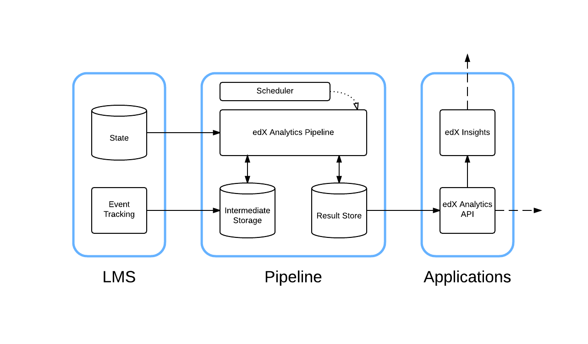

对edX数据这部分关注已久，也耗费了我大量时间。
五月以来，利用晚上和周末时间，走通了edX oauth2这块的流程，目前edX平台相关的数据理论上可以在微信/手机移动端以及第三方平台使用和呈现。我最近试图通过微信和edX两边的oauth，将两者相连，目前进展还算顺利，不过复杂度比我预期的要高。即将完成edX微信服务号的beta版本。此后会将这部分的思路丢到博客上。
我本计划在工作的一年期内，理清edX的架构和逻辑/数据流，如今应该还剩下最后一块难啃的骨头，就是可视化数据展示了
这部分的价值和意义不需多说，数据分析和可视化这也是edX最吸引我的地方之一，其中的行为分析和数据挖掘的潜力，令很多教育从业者青眼有加。
在此分享这部分我所了解的资料和进展，有兴趣的小伙伴可以在此基础上继续挖掘。如果你对这块也了解的话，可以发email给我：wuwenjie718@gmail.com ，我们一起折腾
insights
谈到edx中数据可视化，必然提起的是insights。
我们先来看下insights是什么
Course teams use edX Insights to access to data gathered from active courses. Course teams use edX Insights to display charts, summary statistics, and data tables......
架构

组件
- LMS. LMS产生学生与平台交互时产生的信息，记录到tracking log中，tracking log是此后分析的数据来源，关于tracking log可以参考我的这篇文章.LMS也在MySQL中产生大量学生相关的信息
- edX Analytics Pipeline.这一块就是数据处理的核心所在了。有以下依赖
- Hadoop
- Hive
- Sqoop
- >=MySQL5.6
- Python 2.7
- >=ubuntu12.04
- Scheduler 任务调度
- edX Insights 可以将其视为web表现层，向用户呈现分析的结果
各个组件的协作可在架构图中看出
相关的库
此前有个更早的原型库insights.后来将其功能拆解到以上三个库中
思路
综上我们发现，要使这部分可用，最困难的地方来自edx-analytics-pipeline，其依赖了亚马逊的服务，在国内使用很不方便。至于insights这些模块其实在configuration/master中已经是默认安装的（内部端口是8110），要做的不过是做些配置
目前想到两个方案：
- 使用一台单独的服务器来跑数据分析相关的计算，并保证其能稳定连接亚马逊服务（你懂的）
- 使用docker来跑analytics相关的任务，可参考这个分支：analytics-docker
题外：我相信跑在docker上的edX是普及edX（企业级内部培训系统）的方向，edX系统的复杂度，已经影响到其可用性了。作为教育从业者，我想要一个可用的系统。最好是简单稳定的黑盒就好，你特么丢给我一堆零件是什么鬼
将analytics跑起来的相关资料
edX的其他数据可视化
可以看下我此前的这篇文章